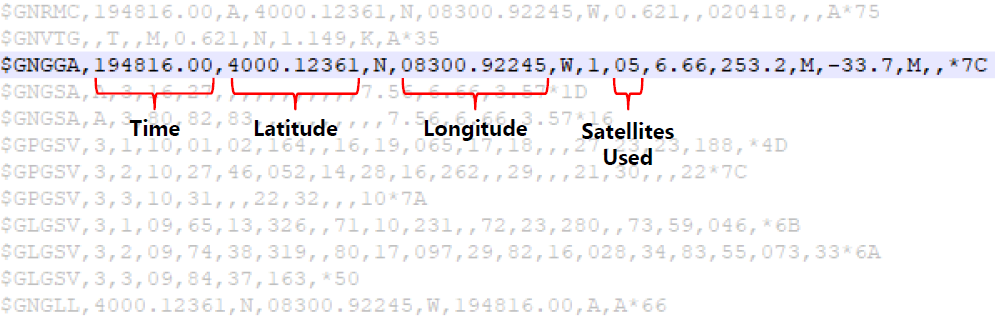

GPS receivers output NMEA sentences. NMEA - National Marine Electronics Association - established a standard for data communication between marine electronics such as sonars and GPS receivers. This standard dictates the format and meaning of the data output by GPS receivers. The figure below shows the log file of a u-blox GPS receiver. This is a simple text file of ASCII characters which act as code for specific types of information.
